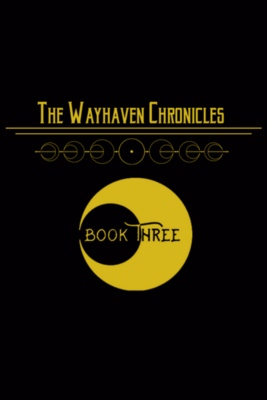
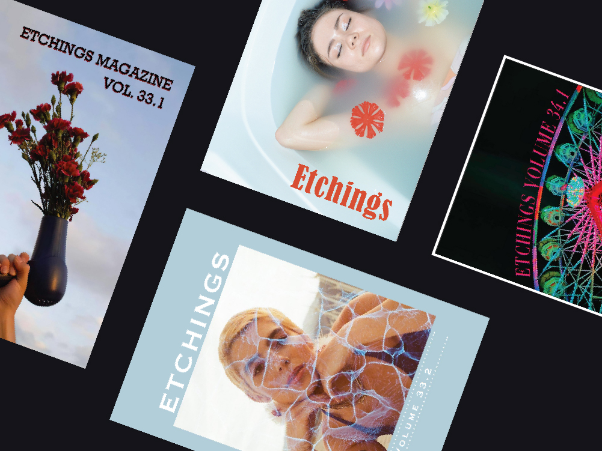

My Hobbies
Besides video games, I love to read and write. You'll often see my work in the UIndy Etchings art magazine for poetry and I tend to spend a lot of nights writing more. Currently, my favorite novel series is the Wayhaven Chronicles written by Mishka Jenkins. If you have the time and tend to lean towards romance novels, it's certainly worth it.
If anyone is curious here's my piece that won the Dorlis Gott Armentrout Award:

Between Sliced Memories
Bring me to your favorite sandwich shop.
The one that nobody knows about.
The one you brought me to three winters ago.
The one where the same register girl looks at us
like we're the best thing since sliced bread.
Let me order the same sandwich.
The one I ordered the first time you brought me here.
The one I swear tastes good if you try.
The one I wish every sandwich shop had
but none of them ever do.
Take me to your favorite spot to picnic.
The one where snow doesn't land.
one that reflects your blue eyes the best.
The one where I had my first kiss
and where you had yours.
Kiss me like you did back then.
The one that tasted like barbeque chicken.
The one I could never forget about.
The one that made me realize
I could never love anyone else the same.